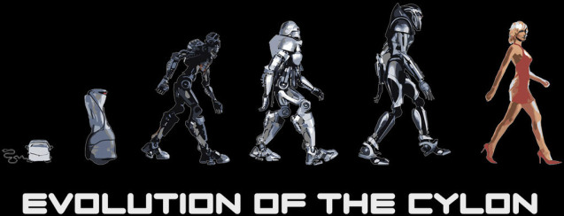

Identifying Cylon Agents
The latest intelligence we have received about Cylon technology indicates that they were developing a method to emulate humans. While this technology was far from complete, we believe that the Cylons have been working on or even perfecting human replication in the time since the first Cylon War.
This idea has been declared a “conspiracy theory” and an “impossibility” by some of the Colonial Government’s top scientists. However, we at the CDF see through the propaganda and know better than to underestimate the abilities of the Cylons.

Figure 6.1: The Evolution of the Cylon
Every member of the CDF has undergone rigorous testing to ensure that they are not a Cylon. However, there will be others you must work with after the attack who have not been verified by the CDF. Therefore, the following sections have been developed to guide you in both identifying and destroying Cylon Agents.